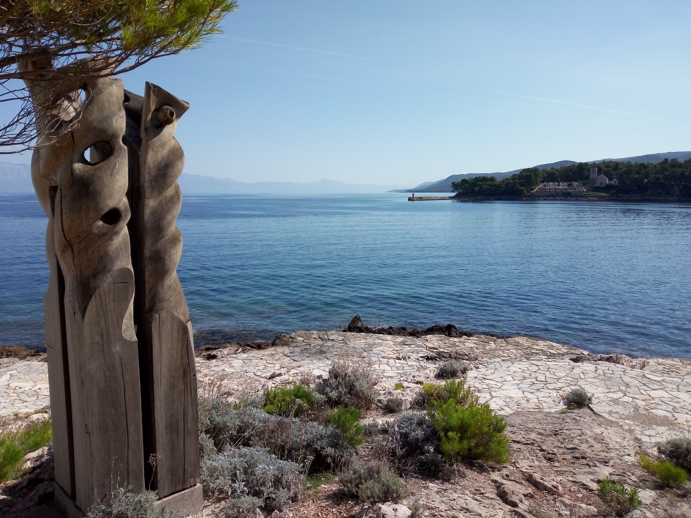

Jelsa
Croatia · Island of Hvar · Adriatic Coast
Jelsa is a charming coastal town on the island of Hvar, offering
a quieter and more intimate side of Croatia's Adriatic beauty.
Surrounded by pine-covered hills, vineyards, and crystal-clear
waters, the town combines traditional Dalmatian architecture
with the relaxed rhythm of Mediterranean life.
Its picturesque harbour, stone streets, small squares, and
waterfront cafés create an inviting atmosphere for exploring
and enjoying the island at an unhurried pace. Jelsa is also
an excellent starting point for discovering the natural
landscapes and coastal villages of Hvar Island.
These photographs preserve my personal travel memories
and impressions of Jelsa, capturing the character and beauty
of this peaceful Adriatic destination.
My Photo Gallery
Explore my personal photographs and travel memories from Jelsa, Croatia.
View All Photos ↗